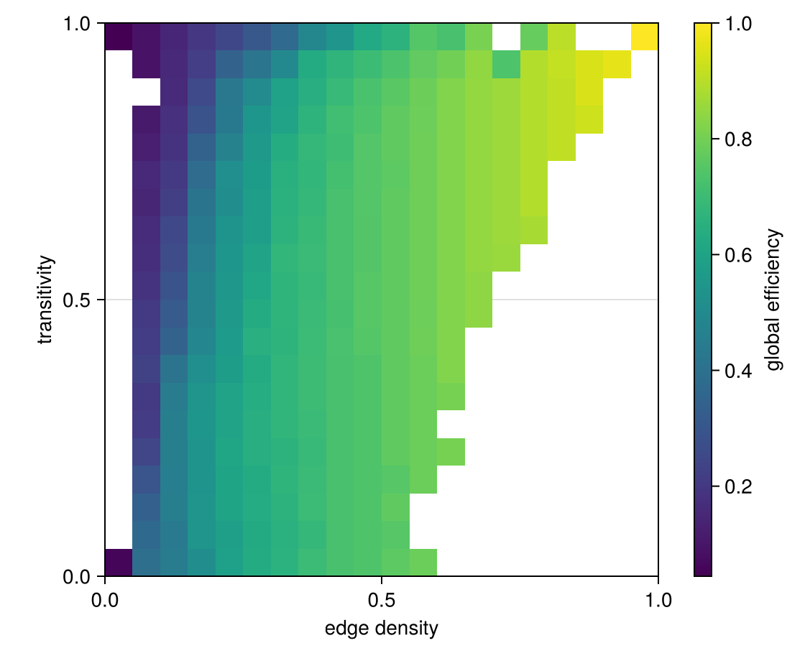

A custom genotype: graphs
The genotype in the other tutorials is a vector of numbers. Here it is a Graphs.SimpleGraph, an object that the package knows nothing about. Compared with a vector genotype, three things change:
- the problem says how to draw a random graph (
init), - a variation operator says how to make a child graph from a parent (
vary), and MAPElitesis told the genotype type and the variation operator.
The archive, the emitter and the loop are the same as for vectors.
Set up once, from the repository root:
julia --project=examples -e 'using Pkg; Pkg.develop(path="."); Pkg.instantiate()'Run:
julia --project=examples examples/graphs.jlusing Graphs: SimpleGraph, add_edge!, add_vertex!, erdos_renyi, global_clustering_coefficient,
gdistances, has_edge, ne, nv, rem_edge!, rem_vertex!
using QualityDiversity
using Random: AbstractRNG, XoshiroThe problem
We look for graphs that are efficient at carrying traffic, in every combination of how many edges they have and how clustered they are.
The fitness is the global efficiency: the mean of 1/distance over all pairs of vertices, where a pair that is not connected counts 0. It is 1 for a complete graph.
function global_efficiency(g::SimpleGraph)
n = nv(g)
total = 0.0
for source in 1:n, distance in gdistances(g, source)
if distance != 0 && distance != typemax(Int)
total += 1 / distance
end
end
return total / (n * (n - 1))
endglobal_efficiency (generic function with 1 method)The descriptor has two numbers between 0 and 1: the edge density (the fraction of possible edges that are present) and the transitivity (the fraction of connected triples of vertices that close into a triangle).
density(g::SimpleGraph) = 2 * ne(g) / (nv(g) * (nv(g) - 1))
score(g::SimpleGraph) = (global_efficiency(g), (density(g), global_clustering_coefficient(g)))score (generic function with 1 method)score returns (fitness, descriptor), as for a vector genotype. The only new part of the problem is init, which draws a random graph to start from: here a random graph with between 8 and 30 vertices.
random_graph(rng::AbstractRNG) = erdos_renyi(rand(rng, 8:30), 0.2 + 0.3 * rand(rng); rng)
prob = QDProblem(score; init=random_graph, bounds=((0, 1), (0, 1)))QDProblem{typeof(Main.score), typeof(Main.random_graph), Tuple{Tuple{Float64, Float64}, Tuple{Float64, Float64}}}(Main.score, Main.random_graph, ((0.0, 1.0), (0.0, 1.0)))The variation operator
A variation operator is a type, a subtype of AbstractVariation, together with a method of QualityDiversity.vary that takes a random number generator, the operator and a parent, and returns a child. The child must be a new graph: the parent stays in the archive and must not change.
Our operator usually flips a random edge (adds it if it is absent, removes it if it is present), and sometimes adds or removes a vertex, within limits on the number of vertices. So the graphs in the archive can have different sizes.
struct GraphMutation <: AbstractVariation
min_nodes::Int
max_nodes::Int
end
function QualityDiversity.vary(rng::AbstractRNG, op::GraphMutation, parent::SimpleGraph{Int})
child = copy(parent)
r = rand(rng)
if r < 0.1 && nv(child) < op.max_nodes
# a new vertex, joined to a random existing one
add_vertex!(child)
add_edge!(child, nv(child), rand(rng, 1:nv(child)-1))
elseif r < 0.2 && nv(child) > op.min_nodes
rem_vertex!(child, rand(rng, 1:nv(child)))
else
a, b = rand(rng, 1:nv(child)), rand(rng, 1:nv(child))
if a != b
has_edge(child, a, b) ? rem_edge!(child, a, b) : add_edge!(child, a, b)
end
end
return child
endRunning MAP-Elites
MAPElites builds a grid archive for the problem. By default it stores Vector{Float64} genotypes and varies them with a Gaussian mutation; for graphs we pass the genotype type and our operator instead.
alg = MAPElites(prob; dims=(20, 20), batch_size=100, genotype=SimpleGraph{Int},
variation=GraphMutation(8, 30))
result = solve(prob, alg; budget=100_000, rng=Xoshiro(1))
archive = result.archive
println(length(archive), " of ", QualityDiversity.capacity(archive), " cells filled")
println("best efficiency: ", round(max_fitness(archive); digits=3))271 of 400 cells filled
best efficiency: 1.0Every elite is a graph, together with its evaluation:
g, ev = first(QualityDiversity.elites(archive))
(nv(g), ne(g), ev.fitness, ev.descriptor)(12, 23, 0.6666666666666667, [0.3484848484848485, 0.19480519480519481])The archive
The heatmap shows the efficiency of the best graph in every cell; empty cells are left blank. Efficiency rises with density, so compare cells in the same column: at a given density, how much efficiency does clustering cost?
using CairoMakie
fig = Figure(size=(560, 460))
ax = Axis(fig[1, 1]; xlabel="edge density", ylabel="transitivity", aspect=1)
hm = heatmap!(ax, archive)
Colorbar(fig[1, 2], hm; label="global efficiency")
fig